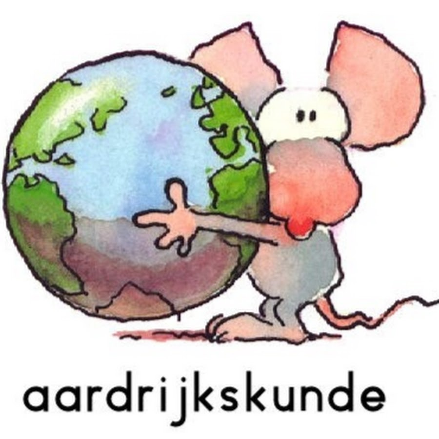

Hier kan je informatie vinden over een les aardrijkskunde die je zou kunnen doen. Je kan het natuurlijk ook doen met je eigen stof en deze template gebruiken.
Hier vindt je allemaal informatie over wat voor lessen der zijn en kan je inspiratie opdoen voor jouw les.